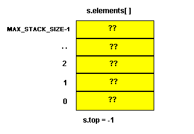
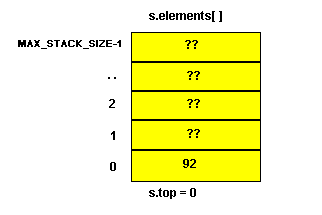

|
|
In this lab we will discuss a widely-used abstract data type called a stack.
A. Abstract Data Type
B. Stacks
C. Array Implementation of the Stack Class
D. Pointer Implementation of Stacks
In previous labs, we have used the phrase Abstract Data Type to describe some of our classes. In particular, we used it to describe the list class. In this section, we explore exactly what we mean by Abstract Data Type (ADT).
In Lab 5, we looked at common primitive data types like int, double, char and so on. We say a data type is characterized by:
For example, an int data type contains the set of negative and positive whole numbers plus 0. The data representation is a string of binary digits and the operations include +, -, *, /, and so on.
An ADT is similar to a data type though slightly different. It is a set of values and a set of operations that can be applied uniformly to these values. When we use the word abstract, we usually generalize or leave out information.
Exercise 1:Compare the description of a data type and an abstract data type. What information was left out?
A class defines a data type. The instances of a class (or objects of the class) are the possible values of the class. The operations on the objects are the methods defined in the class. The data representation is all the data members that are contained within the object. If there is no external access to the data representation, the class is an abstract data type. The underlying representation of the data members is not important as long as the operations work properly.
For example, suppose we have a Calendar class. It is an ADT because the underlying data representation of a calendar is unimportant. All the user of the calendar cares about are the operations that can be done such as display the calendar, change the month to the next month or previous month, change the year, or select a given day on the calendar.
In the following sections, we will learn about a stack which is a very important abstract data type.
A stack is an abstract data type that contains a set of values and permits insertion and deletion at only one end called the top. Note:
An example of a stack is the pop-up mechanism that holds trays or plates in a cafeteria. The last plate placed on the stack (insertion) is the first plate off the stack (deletion). A stack is sometimes called a Last-In, First-Out or LIFO data structure. Stacks have many uses in computing. They are used in solving such diverse problems as "evaluating an expression" to "traversing a maze."
A stack data structure is used when subprograms are called. The system must remember where to return after the called subprogram has executed. It must remember the contents of all local variables before control was transferred to the called subprogram. The return from a subprogram is to the instruction following the call that originally transferred control to the subprogram. Therefore, the return address and the local variables of the calling subprogram must be stored in a designated area in memory. For example, suppose function A has control and calls B which calls C which calls D. While D is executing, the return stack might look like this:
The first "return" would return (from D) to the return address in Function C and the return stack would then look like:
The last function called is the first one completed. Function C cannot finish execution until Function D has finished execution. The sequence in which these functions are executed is last-in, first-out. Therefore, a stack is the logical data structure to use for storing return addresses and local variables during subprogram invocations. You can see that the "stack" keeps the return addresses in the exact order necessary to reverse the steps of the forward chain of control as A calls B, B calls C, C calls D.
Suppose we want to print a linked list in reverse order. A stack
is the storage structure we need to hold the data in the nodes of the list
as we traverse the list in a forward fashion. We traverse the linked
list starting at the head. As each node is visited its data value
is pushed onto a stack. Once the stack is built, we will take each
item off the stack one at a time and print it giving the last to first
order desired.
For example, traversing the list and "pushing" each element onto a stack
would give the following stack:
Removing one element at a time from the stack and printing we have the following:
75.44, 56.25, 92.75, 35.60
The stack data structure is one example of a restricted list. It is restricted because insertion and deletion can only occur at the top of the stack. A stack is the simplest type of list.
We will use a class called Stack to represent the stack abstract data type. Insertion and deletion operations have special names in stacks--insertion is called "push" and deletion is called "pop". Thus s.push(item) means to insert "item" at the top of stack s and s.pop() means to remove the value at the top of the stack.
A stack's data can be represented internally in various ways. We will illustrate two methods and discuss the merits of each. First, we demonstrate how it can be represented using an array.
The data in a stack could be implemented using a data member which is an array called elements[0..MAX_STACK_SIZE-1]. The stack of elements could be built up (from low index, 0, toward higher indices) or down (from high index, MAX_STACK_SIZE-1, toward lower indices). It is just a matter of taste. We also need a data member that indicates the location of the top of the stack. Call it top. When the stack is empty we have the following (the ?? means the memory locations are uninitialized) :

Note that s.top contains the value -1, meaning that the stack is empty.
If we push one item, say 92, on the stack we have:

Note that s.top now contains the value 0 meaning that the top of the stack is s.element[0].
An array has some fixed limit like MAX_STACK_SIZE above. If top is MAX_STACK_SIZE-1, the stack is full and an error should occur if you try to push another item onto the stack. If an array implementation were used, a member function full() should be included which will perform a test for a full stack. Likewise, a member function empty() should be included which will be used to determine if a pop were valid. A pop from an empty stack (top is -1) should cause an error condition. Both error conditions must be handled.
We have implemented a stack class using an array. The file inlab12a.h includes the declaration of the class and the implementation of the class is included in the file inlab12a.cc.
This implementation of a stack has a few disadvantages. Since we are using an array, we must know in advance the upper bound for the number of elements in the list. In some situations, knowledge of such an upper bound is impossible. If we use an upper bound which is extremely large (in order to have a stack which can contain our data), we may be wasting space if our data turns out to be quite small. If we select an upper bound too small, then we have to worry about a stack overflow. Thus we may find it advantageous to use a dynamic linked list implementation instead of the static array implementation. In a linked list implementation, space is allocated only as needed. If we do have a reasonable upper bound for the number of elements, the static implementation of the stack has the advantage of using less space per element than a dynamic list since a dynamic linked list must contain nodes with a data field and a link field.
The problem with a "full" stack almost disappears if we use a linked list implementation of a stack. With a list, the "full" condition will only be true if there is no more memory for the system to allocate to your program. While this can happen (and does), it is much less frequent than filling up an array.
Here is a picture of a stack implemented as a linked list:
The first part of main12.cc needs to be modified slightly. It already reads a string and pushes it on a stack. The string also needs to be saved in a character array. Modify the program to correspond with the algorithm above. Turn in a listing, compile and run of this modified program. Test your program with the strings listed above and with a string which is not a palindrome to demonstrate that it works.push each letter of the string on a stack. Also place the character into a character array, say str. Set j = 0 and done = false While the stack is not empty and not(done) pop a character, say ch if str[j] == ch then increment j and continue else set done to true (the string isn't a palindrome) if done is true the string isn't a palindrome else it is.